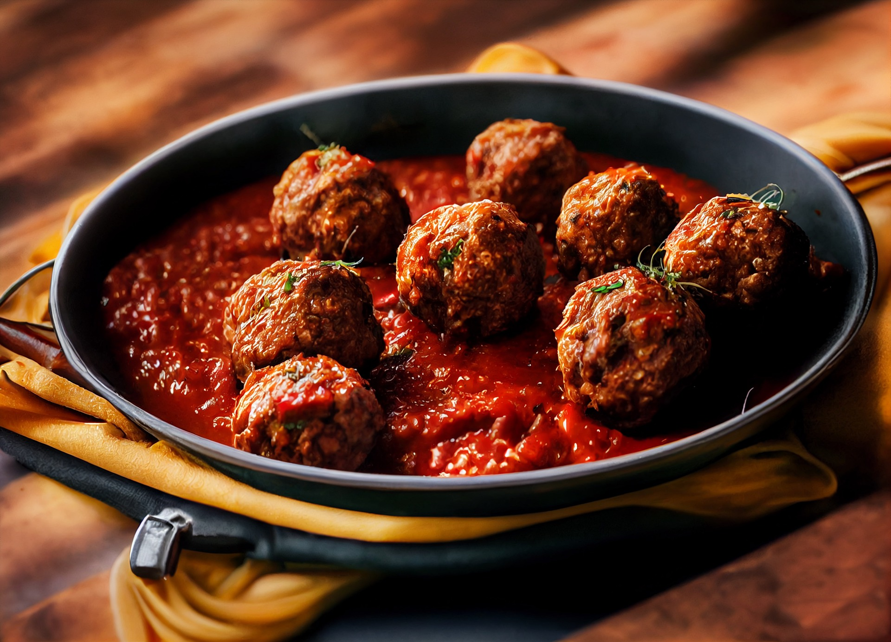
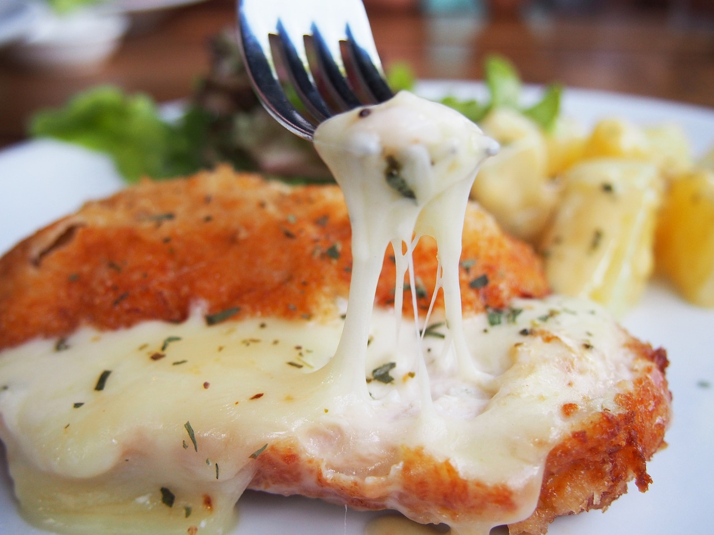

Join the Dark Side: The Meatball Side.
A Warm Hug on a Winter Day.
I remember coming home after a particularly hard day at school when I was a little girl. My auntie had picked me up from elementary school during the winter days. The cold had sept into my bones, and I felt a chill. I wrapped myself in a blanket and turned on the television to my favourite show, Roly Poly Olie, on Treehouse. My aunt, noticing I was cold, asked if I was hungry, and in my chill, I was. She prepped a warm meal for me, a meatball sandwich.
The Roly Poly Meatball sandwich is an ode to my aunt, and my favourite comfort show growing up. The sandwich, with round meatballs, savoury sauce, and melted cheese, was a warm hug on a cold day. In the cold Albertan north, the most comforting moments come from the simplest pleasures: Meatballs. I recommend giving this sandwich a try.

The Meat of it All: Meatballs
Meatballs are a warm and tasty dish. My auntie is a chef, and when she made the meatballs, she usually used ground real Alberta meat, typically beef, pork, or a combination. She let me sprinkle the herbs and spices required to create a delicious, savoury taste. The beauty of meatballs lies in their adaptability; I've watched her make them in various ways—baked, fried, or simmered in sauces like marinara or gravy. They're perfect for pasta dishes, appetizers, or, best of all, sandwiches. They can be enjoyed in both casual and fancy meals. Meatballs are the perfect dish for the cool days of winter.
Marinara-ing It Up!
The sauce for the meatballs is a rich and savoury marinara that’s bursting with flavour. When my aunt would make her marinara sauce, she used to take the ripe tomatoes from her own garden, and simmer them to create a thick, velvety base. My favourite part would be when she would add fresh garlic and aromatic onions for depth of flavour. Then, adding a blend of herbs like basil, oregano, and a hint of red pepper flakes gave the marinara sauce a warm, comforting kick. She would always add a touch of olive oil; she said it rounds the flavour out and adds a smooth finish that clings to the meatballs. The warm, complex mix of flavours always shines through with every bite.

The Ooey Gooey Deliciousness of it all (The answer is Cheese).
My favourite part of the Meatball Sandwich is the cheese. The best way to enhance the meatball sandwich is by adding M-O-Z-Z-A-R-E-L-L-A. Mozzarella is a salty cheese known to have the most satisfying cheese pull. My aunt likes to tell me that the taste of mozzarella complements the sour and tomatoey marinara sauce, so, so, well. To add a bit of freshness to the heaviness of the meatball, cheese, and marinara sauce combination, add some fresh basil. If you like to add a little bit of spice to your life, I suggest topping the sandwich off with a couple of pickled jalapenos, to meet your spicy needs.